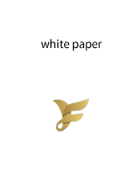

FLW applies the most advanced and cutting-edge block chain technology and innovative mining mode. The value is immeasurable in the future. FLOWCOIN is faster and cheaper that developed with IPFS distributed technology. FLW is the incentive layer of decentralized distributed traffic network system developed based on IPFS. Participants will contribute their idle hard disk space and network bandwidth resources to access to FLW. Let the entire platform achieve revenue sharing, community co-governance and platform sharing.
